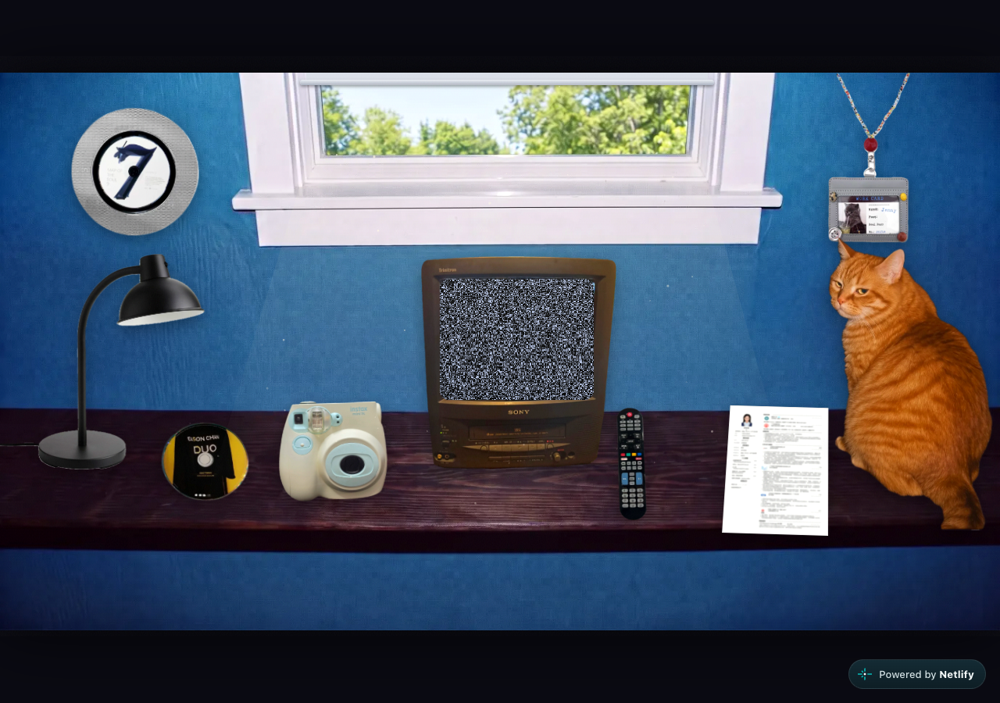

中式梦核风格的互动房间，贴纸 hover、猫的五段演出、电视三频道、百叶窗昼夜系统。

想做一个人主页，把简历、项目这些正经东西藏进一个梦核房间里，猫按脚本演几段，最后跳到各个项目去。
纯 HTML/CSS/JS 无依赖，Three.js 只用于工牌那一块。
21MB 的 PNG 首屏压成 WebP 到 1MB。Netlify 用 Windows 自带 zip 打包，路径带反斜杠会全站 404，得换 Python 重新打。